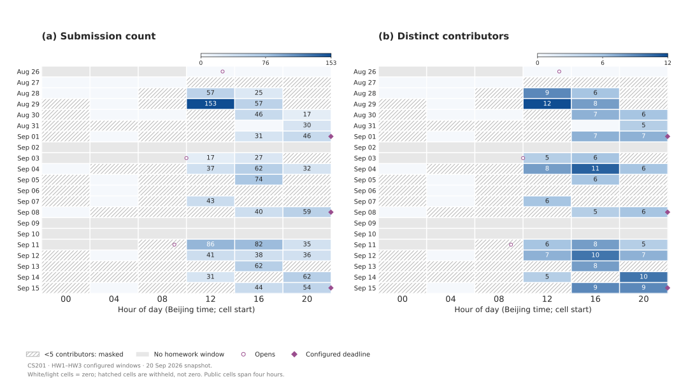
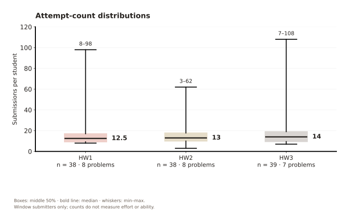
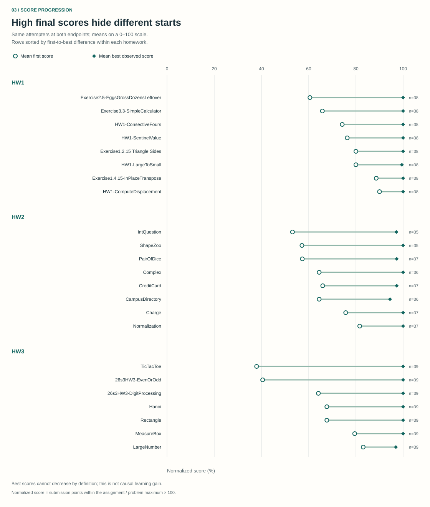

STATS 401 · FINAL PROJECT · IN-CLASS PROGRESS CHECK
Similar scores.
Different paths.
CS201 Homework Submission Patterns:
Timing, Retries, and Score Progression
When homework scores cluster near full marks, the submission process still varies. We examine when students submit, how often they retry, and how first scores compare with the best scores they reach.
Current milestone: three implemented static figures using actual project data. Interactions and the user evaluation below are planned.
THE QUESTION
What do near-perfect scores leave out?
In the participation_mode=0 records, 37/40 HW1 scores, 33/39 HW2 scores and 37/39 HW3 scores are 100. The formal interpretation of this participation field still needs confirmation. These records motivate a process-focused analysis; they are not a substitute for verifying the official grading rules.
Within the observation windows, 178 submissions earned partial credit. The figures below describe that recorded process. Submission gaps are not measured study time, and more attempts do not establish greater effort or better learning.
TIMING
Activity volume and participation
tell different stories.
Across the full day on 29 August, 233 submissions came from 14 students. In the visible 12:00–16:00 cell, 153 submissions came from 12 students. A busy period need not mean the whole class was working then.

{kind=link}
{kind=link}
Accessible data table · calendar
| Date | Hours (Beijing) | Status | Submissions | Distinct contributors |
|---|---|---|---|---|
| 2026-08-26 | 00:00–04:00 | inactive | — | — |
| 2026-08-26 | 04:00–08:00 | inactive | — | — |
| 2026-08-26 | 08:00–12:00 | inactive | — | — |
| 2026-08-26 | 12:00–16:00 | visible | 0 | 0 |
| 2026-08-26 | 16:00–20:00 | visible | 0 | 0 |
| 2026-08-26 | 20:00–24:00 | visible | 0 | 0 |
| 2026-08-27 | 00:00–04:00 | visible | 0 | 0 |
| 2026-08-27 | 04:00–08:00 | visible | 0 | 0 |
| 2026-08-27 | 08:00–12:00 | visible | 0 | 0 |
| 2026-08-27 | 12:00–16:00 | suppressed | — | — |
| 2026-08-27 | 16:00–20:00 | suppressed | — | — |
| 2026-08-27 | 20:00–24:00 | suppressed | — | — |
| 2026-08-28 | 00:00–04:00 | visible | 0 | 0 |
| 2026-08-28 | 04:00–08:00 | visible | 0 | 0 |
| 2026-08-28 | 08:00–12:00 | suppressed | — | — |
| 2026-08-28 | 12:00–16:00 | visible | 57 | 9 |
| 2026-08-28 | 16:00–20:00 | visible | 25 | 6 |
| 2026-08-28 | 20:00–24:00 | suppressed | — | — |
| 2026-08-29 | 00:00–04:00 | suppressed | — | — |
| 2026-08-29 | 04:00–08:00 | visible | 0 | 0 |
| 2026-08-29 | 08:00–12:00 | suppressed | — | — |
| 2026-08-29 | 12:00–16:00 | visible | 153 | 12 |
| 2026-08-29 | 16:00–20:00 | visible | 57 | 8 |
| 2026-08-29 | 20:00–24:00 | suppressed | — | — |
| 2026-08-30 | 00:00–04:00 | suppressed | — | — |
| 2026-08-30 | 04:00–08:00 | visible | 0 | 0 |
| 2026-08-30 | 08:00–12:00 | visible | 0 | 0 |
| 2026-08-30 | 12:00–16:00 | suppressed | — | — |
| 2026-08-30 | 16:00–20:00 | visible | 46 | 7 |
| 2026-08-30 | 20:00–24:00 | visible | 17 | 6 |
| 2026-08-31 | 00:00–04:00 | suppressed | — | — |
| 2026-08-31 | 04:00–08:00 | suppressed | — | — |
| 2026-08-31 | 08:00–12:00 | suppressed | — | — |
| 2026-08-31 | 12:00–16:00 | suppressed | — | — |
| 2026-08-31 | 16:00–20:00 | visible | 0 | 0 |
| 2026-08-31 | 20:00–24:00 | visible | 30 | 5 |
| 2026-09-01 | 00:00–04:00 | suppressed | — | — |
| 2026-09-01 | 04:00–08:00 | visible | 0 | 0 |
| 2026-09-01 | 08:00–12:00 | suppressed | — | — |
| 2026-09-01 | 12:00–16:00 | suppressed | — | — |
| 2026-09-01 | 16:00–20:00 | visible | 31 | 7 |
| 2026-09-01 | 20:00–24:00 | visible | 46 | 7 |
| 2026-09-02 | 00:00–04:00 | inactive | — | — |
| 2026-09-02 | 04:00–08:00 | inactive | — | — |
| 2026-09-02 | 08:00–12:00 | inactive | — | — |
| 2026-09-02 | 12:00–16:00 | inactive | — | — |
| 2026-09-02 | 16:00–20:00 | inactive | — | — |
| 2026-09-02 | 20:00–24:00 | inactive | — | — |
| 2026-09-03 | 00:00–04:00 | inactive | — | — |
| 2026-09-03 | 04:00–08:00 | inactive | — | — |
| 2026-09-03 | 08:00–12:00 | inactive | — | — |
| 2026-09-03 | 12:00–16:00 | visible | 17 | 5 |
| 2026-09-03 | 16:00–20:00 | visible | 27 | 6 |
| 2026-09-03 | 20:00–24:00 | suppressed | — | — |
| 2026-09-04 | 00:00–04:00 | visible | 0 | 0 |
| 2026-09-04 | 04:00–08:00 | suppressed | — | — |
| 2026-09-04 | 08:00–12:00 | suppressed | — | — |
| 2026-09-04 | 12:00–16:00 | visible | 37 | 8 |
| 2026-09-04 | 16:00–20:00 | visible | 62 | 11 |
| 2026-09-04 | 20:00–24:00 | visible | 32 | 6 |
| 2026-09-05 | 00:00–04:00 | suppressed | — | — |
| 2026-09-05 | 04:00–08:00 | visible | 0 | 0 |
| 2026-09-05 | 08:00–12:00 | suppressed | — | — |
| 2026-09-05 | 12:00–16:00 | suppressed | — | — |
| 2026-09-05 | 16:00–20:00 | visible | 74 | 6 |
| 2026-09-05 | 20:00–24:00 | suppressed | — | — |
| 2026-09-06 | 00:00–04:00 | suppressed | — | — |
| 2026-09-06 | 04:00–08:00 | visible | 0 | 0 |
| 2026-09-06 | 08:00–12:00 | suppressed | — | — |
| 2026-09-06 | 12:00–16:00 | suppressed | — | — |
| 2026-09-06 | 16:00–20:00 | suppressed | — | — |
| 2026-09-06 | 20:00–24:00 | suppressed | — | — |
| 2026-09-07 | 00:00–04:00 | suppressed | — | — |
| 2026-09-07 | 04:00–08:00 | visible | 0 | 0 |
| 2026-09-07 | 08:00–12:00 | suppressed | — | — |
| 2026-09-07 | 12:00–16:00 | visible | 43 | 6 |
| 2026-09-07 | 16:00–20:00 | suppressed | — | — |
| 2026-09-07 | 20:00–24:00 | suppressed | — | — |
| 2026-09-08 | 00:00–04:00 | visible | 0 | 0 |
| 2026-09-08 | 04:00–08:00 | suppressed | — | — |
| 2026-09-08 | 08:00–12:00 | suppressed | — | — |
| 2026-09-08 | 12:00–16:00 | suppressed | — | — |
| 2026-09-08 | 16:00–20:00 | visible | 40 | 5 |
| 2026-09-08 | 20:00–24:00 | visible | 59 | 6 |
| 2026-09-09 | 00:00–04:00 | inactive | — | — |
| 2026-09-09 | 04:00–08:00 | inactive | — | — |
| 2026-09-09 | 08:00–12:00 | inactive | — | — |
| 2026-09-09 | 12:00–16:00 | inactive | — | — |
| 2026-09-09 | 16:00–20:00 | inactive | — | — |
| 2026-09-09 | 20:00–24:00 | inactive | — | — |
| 2026-09-10 | 00:00–04:00 | inactive | — | — |
| 2026-09-10 | 04:00–08:00 | inactive | — | — |
| 2026-09-10 | 08:00–12:00 | inactive | — | — |
| 2026-09-10 | 12:00–16:00 | inactive | — | — |
| 2026-09-10 | 16:00–20:00 | inactive | — | — |
| 2026-09-10 | 20:00–24:00 | inactive | — | — |
| 2026-09-11 | 00:00–04:00 | inactive | — | — |
| 2026-09-11 | 04:00–08:00 | inactive | — | — |
| 2026-09-11 | 08:00–12:00 | suppressed | — | — |
| 2026-09-11 | 12:00–16:00 | visible | 86 | 6 |
| 2026-09-11 | 16:00–20:00 | visible | 82 | 8 |
| 2026-09-11 | 20:00–24:00 | visible | 35 | 5 |
| 2026-09-12 | 00:00–04:00 | suppressed | — | — |
| 2026-09-12 | 04:00–08:00 | visible | 0 | 0 |
| 2026-09-12 | 08:00–12:00 | suppressed | — | — |
| 2026-09-12 | 12:00–16:00 | visible | 41 | 7 |
| 2026-09-12 | 16:00–20:00 | visible | 38 | 10 |
| 2026-09-12 | 20:00–24:00 | visible | 36 | 7 |
| 2026-09-13 | 00:00–04:00 | suppressed | — | — |
| 2026-09-13 | 04:00–08:00 | suppressed | — | — |
| 2026-09-13 | 08:00–12:00 | suppressed | — | — |
| 2026-09-13 | 12:00–16:00 | suppressed | — | — |
| 2026-09-13 | 16:00–20:00 | visible | 62 | 8 |
| 2026-09-13 | 20:00–24:00 | suppressed | — | — |
| 2026-09-14 | 00:00–04:00 | suppressed | — | — |
| 2026-09-14 | 04:00–08:00 | suppressed | — | — |
| 2026-09-14 | 08:00–12:00 | suppressed | — | — |
| 2026-09-14 | 12:00–16:00 | visible | 31 | 5 |
| 2026-09-14 | 16:00–20:00 | suppressed | — | — |
| 2026-09-14 | 20:00–24:00 | visible | 62 | 10 |
| 2026-09-15 | 00:00–04:00 | suppressed | — | — |
| 2026-09-15 | 04:00–08:00 | visible | 0 | 0 |
| 2026-09-15 | 08:00–12:00 | suppressed | — | — |
| 2026-09-15 | 12:00–16:00 | suppressed | — | — |
| 2026-09-15 | 16:00–20:00 | visible | 44 | 9 |
| 2026-09-15 | 20:00–24:00 | visible | 54 | 9 |
Planned interaction / animation
Filter by HW1, HW2 or HW3; switch between submissions and distinct contributors; select a day to inspect its time distribution. These controls will distinguish broad participation from repeated attempts. The public view will retain suppression after filtering. No animation is needed to read timing accurately.
RETRIES
A typical count hides a wide range.
Median counts are 12.5, 13 and 14, but observed ranges are 8–98, 3–62 and 7–108. The distributions include only students who submitted within each homework window. The underlying tasks also differ: HW1 and HW2 have eight problems; HW3 has seven.

{kind=link}
{kind=link}
Accessible data table · attempt counts
| Homework | Problems | Submitters | Submissions | Minimum | Q1 | Median | Q3 | Maximum |
|---|---|---|---|---|---|---|---|---|
| HW1 | 8 | 38 | 673 | 8 | 9.25 | 12.5 | 17 | 98 |
| HW2 | 8 | 38 | 664 | 3 | 10 | 13 | 17.75 | 62 |
| HW3 | 7 | 39 | 764 | 7 | 9.5 | 14 | 19 | 108 |
Planned interaction / animation
Switch between all attempts and attempts through the first accepted submission for each student–problem pair, including that successful attempt. Retain all observed attempts for pairs that never reach acceptance. Animate the box transition briefly, with a reduced-motion option, to show how 318 post-acceptance submissions affect the distributions. Acceptance uses the recorded AC verdict; it is distinct from normalized full score.
SCORE PROGRESSION
The endpoint does not tell
the whole story.
HW3 TicTacToe has the largest first-to-best difference: its 39 attempters average 37.95 on their first submission and 100 for their best observed score, a difference of 62.05 percentage points. Both means use the same students.

{kind=link}
{kind=link}
Accessible data table · first and best scores
| Homework | Problem | Name | Attempters | First mean | Best mean | Difference (pp) |
|---|---|---|---|---|---|---|
| HW1 | P2 | Exercise2.5-EggsGrossDozensLeftover | 38 | 60.53 | 100.00 | 39.47 |
| HW1 | P6 | Exercise3.3-SimpleCalculator | 38 | 65.79 | 100.00 | 34.21 |
| HW1 | P7 | HW1-ConsectiveFours | 38 | 74.21 | 100.00 | 25.79 |
| HW1 | P5 | HW1-SentinelValue | 38 | 76.32 | 100.00 | 23.68 |
| HW1 | P4 | Exercise1.2.15 Triangle Sides | 38 | 80.00 | 100.00 | 20.00 |
| HW1 | P3 | HW1-LargeToSmall | 38 | 80.00 | 99.47 | 19.47 |
| HW1 | P8 | Exercise1.4.15-InPlaceTranspose | 38 | 88.60 | 100.00 | 11.40 |
| HW1 | P1 | HW1-ComputeDisplacement | 38 | 90.00 | 100.00 | 10.00 |
| HW2 | P7 | IntQuestion | 35 | 53.14 | 97.14 | 44.00 |
| HW2 | P8 | ShapeZoo | 35 | 57.14 | 100.00 | 42.86 |
| HW2 | P3 | PairOfDice | 37 | 57.30 | 97.30 | 40.00 |
| HW2 | P5 | Complex | 36 | 64.44 | 100.00 | 35.56 |
| HW2 | P2 | CreditCard | 37 | 65.95 | 97.30 | 31.35 |
| HW2 | P6 | CampusDirectory | 36 | 64.44 | 94.44 | 30.00 |
| HW2 | P4 | Charge | 37 | 75.68 | 100.00 | 24.32 |
| HW2 | P1 | Normalization | 37 | 81.62 | 100.00 | 18.38 |
| HW3 | P7 | TicTacToe | 39 | 37.95 | 100.00 | 62.05 |
| HW3 | P1 | 26s3HW3-EvenOrOdd | 39 | 40.51 | 100.00 | 59.49 |
| HW3 | P2 | 26s3HW3-DigitProcessing | 39 | 64.10 | 100.00 | 35.90 |
| HW3 | P3 | Hanoi | 39 | 67.69 | 100.00 | 32.31 |
| HW3 | P5 | Rectangle | 39 | 67.69 | 100.00 | 32.31 |
| HW3 | P4 | MeasureBox | 39 | 79.49 | 100.00 | 20.51 |
| HW3 | P6 | LargeNumber | 39 | 83.08 | 96.92 | 13.85 |
Planned interaction / animation
Filter by homework and switch the best-score endpoint between the first two attempts, first three attempts and all observed attempts. Keep the original set of attempters: for students with fewer attempts, use their best observed score so far. A short endpoint transition will reveal where gains accumulate without changing the comparison cohort.
DATASET & PROCESSING
From private event logs
to reproducible summaries.
Raw dataset · private
A read-only CS201 course export contains nine tables: metadata, course, roster, assignments, submissions, assignment–problem mappings, problems, participations and submission–assignment links. The scoped export contains 42 non-staff/non-superuser roster members and 2,343 submission events from 40 members, across seven assignments. It excludes source code and direct identity fields from the analysis bundle. Pseudonyms remain private.
The export is a snapshot, not a live connection. The website never queries the production server. Raw logs, individual scores and the linkage key are not published.
Processed dataset · public
The three homework assignments contain 2,171 submission events. Restricting each event to its own configured homework opening and deadline retains 2,101 events from 39 students; 70 events outside these windows remain in the raw export but are excluded from these figures.
The published aggregate JSON contains masked time bins, homework count distributions and per-problem score means. It contains no student identifiers or event-level records. Public bins require at least five contributors; suppression reduces disclosure but is not a formal privacy guarantee.
Completed processing
- Confirmed the CS201 roster scope, removed staff/superuser accounts, and recorded the user's confirmation that no extra accounts need exclusion.
- Checked unique keys and join coverage for submissions, assignment links and problem maxima. Repeated attempts remain separate events; they are not treated as accidental duplicates.
- Converted UTC timestamps to Asia/Shanghai before assigning dates or time bins; selected the configured homework windows below.
- Validated finite scores and positive maxima, then calculated
100 × assignment_submission_score / problem_max_points. Raw cross-problem scores are not mixed. - Sorted student–homework–problem events by timestamp and submission ID, computed first and running-best scores, and aggregated over the same attempters.
- Created summary boxplots and masked calendar bins. Zero-submitters remain in the roster count but are excluded from attempt-count distributions.
| Homework | Opens (UTC+08) | Configured deadline (UTC+08) | Outside-window records |
|---|---|---|---|
| HW1 | 2026-08-26 15:00 | 2026-09-01 23:59 | 14 |
| HW2 | 2026-09-03 12:00 | 2026-09-08 23:59 | 35 |
| HW3 | 2026-09-11 11:00 | 2026-09-15 23:59 | 21 |
Scope limitations: configured deadlines may differ from individual extensions. These are recorded submissions, not all work a student performed. No exam outcomes, AI-platform logs or causal claims are part of the current analysis.
Detailed methods and data dictionary ↗ · Source and reproduction instructions ↗
EVALUATION PLAN · NOT YET RUN
Can readers answer the questions
without overinterpreting the data?
We plan a formative study with approximately five classmates or teaching assistants. Participants will use the static page first, then repeat comparable tasks after interactions are implemented. We will rotate task order, use think-aloud observation, and avoid treating this small convenience sample as a representative experiment.
| Task | What we evaluate | What we collect |
|---|---|---|
| Find a visible submission peak and compare its two panels. | Reading dates, color scales, counts vs distinct people, and suppression. | Answer correctness, completion time, help requests and misread cells. |
| Compare the medians and ranges of the three homeworks. | Understanding boxes, min–max whiskers, denominators and unequal problem counts. | Correctness, time, confidence (1–5), and confusing labels. |
| Identify the largest first-to-best score difference. | Reading endpoints, normalized scores and the same-cohort comparison. | Selected problem, estimated gap, time and explanation. |
| Explain what more attempts and longer submission gaps can tell us. | Whether the page prevents effort, study-time and causal-learning misconceptions. | Open-ended explanation, misconception notes and wording suggestions. |
Before testing, we will derive an answer key from the aggregate JSON. We will summarize task accuracy, median completion time and repeated points of confusion, then revise labels, legends and interaction defaults. Feedback will be recorded without names; no evaluation results are claimed at this milestone.
FUTURE EXTENSION / FIGURE 04
Does the next attempt set a new best?
Explore adjacent submissions within the same student, homework and problem, restricted to cases where the prior best is below full credit and a next attempt is observed. Compare the proportion exceeding the historical best across retry-gap bins, reporting both pair counts and distinct contributors.
Stratify by problem, prior score and prior verdict. Sparse bins will be combined or withheld. Any uncertainty estimates must account for repeated observations within students. A retry gap is elapsed clock time, not study duration; this remains an exploratory association. This fourth figure is not part of the three completed static visualizations.